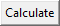
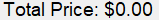

PrintCostCalcultor (or PrintCC) is a simple program I made to help with finding the prices of 3D prints. I wanted this to be avaliable to anyone who needed something like this, or just for me to help with uploading to other devices.
Hopefully, if you decide to use this, this will help you in some way. Cheers! - The Developer
Click the button below to download the application.
V1.0.0To help with learning the software, here is a simple guide on how to use it!
When you open the application, you will see a popup that should look similar to below.

1. A list of requirements to fulfill the equation. Click on the white box to the right of the wording to type in the needed variables
2.1. The calculate button. Press the button to calculate the total cost of your 3D print. A .TXT file will be entered into the programs folder with the result when clicked.
2.2. The result is an organized list of every variable combined into the sum cost. A popup will appear after clicking to confirm the file creation.
3. Displays the total price at the end
4.1. Input the values needed in the white box above. Incorrect answers (such as letters in questions related to money) will be ignored, but the program cannot detect 'slip-ups'
4.2 No symbols are needed for the values, just the numbers or wording requested.
5. When the .TXT is created, it will ALWAYS show up in the same folder in the program. This will likely be changed in a future version.
The program may change in future versions. Thank you again for using PrintCC!